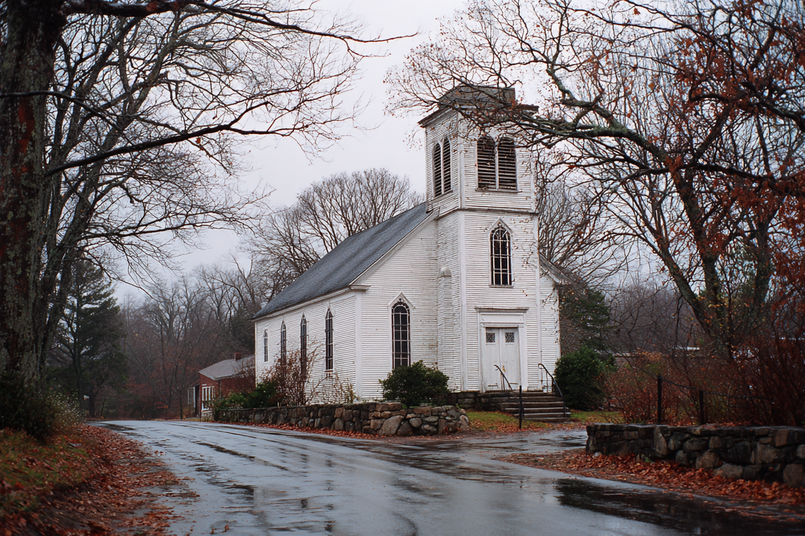
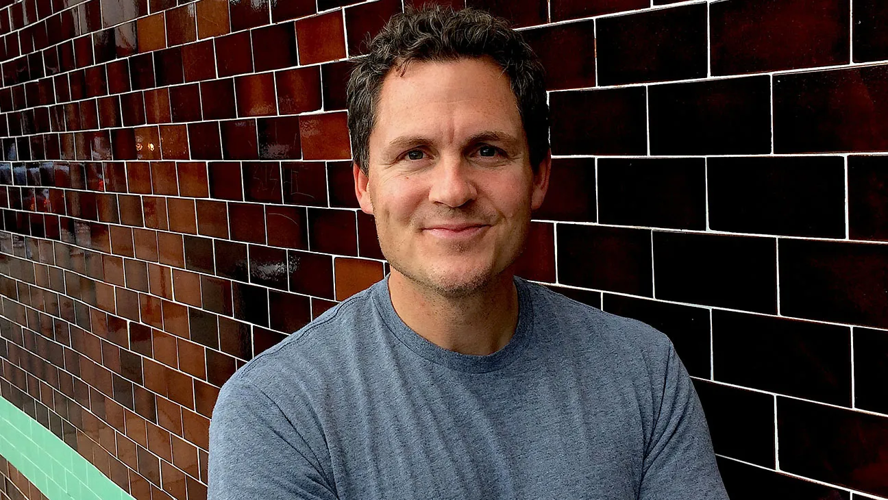
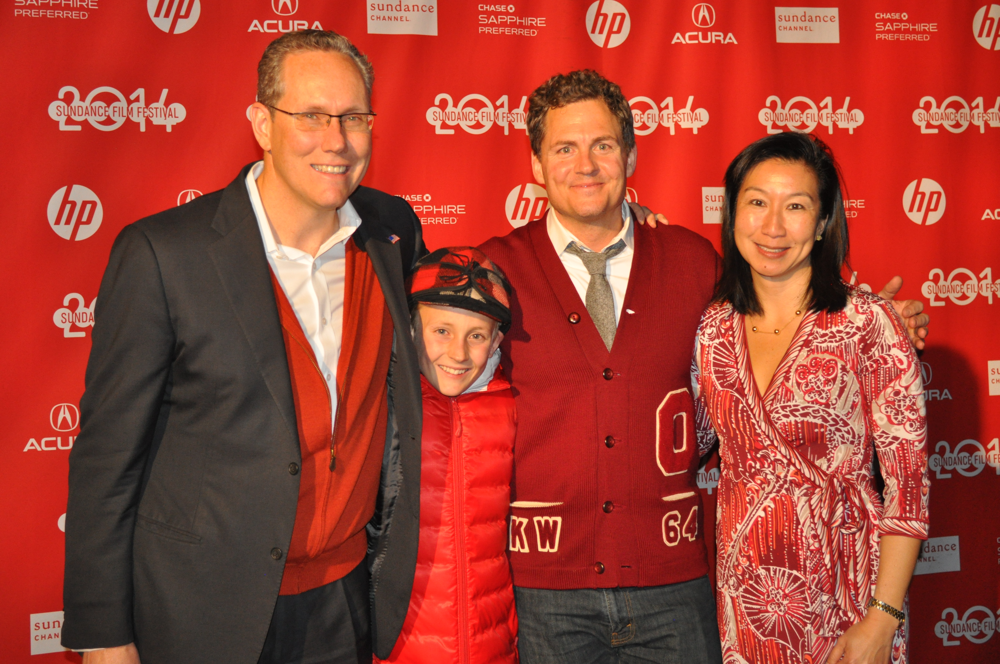
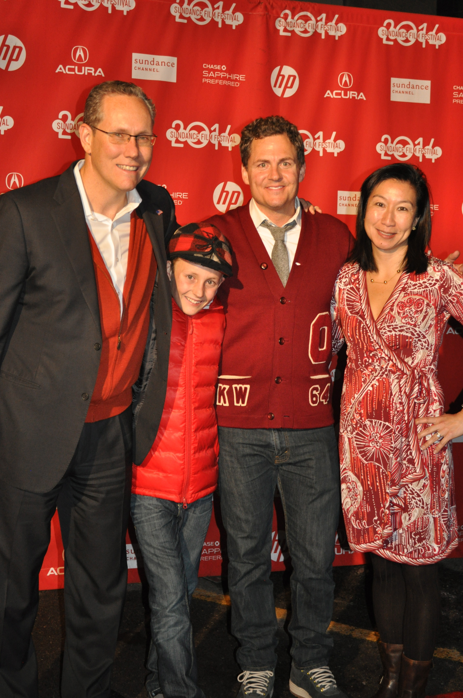
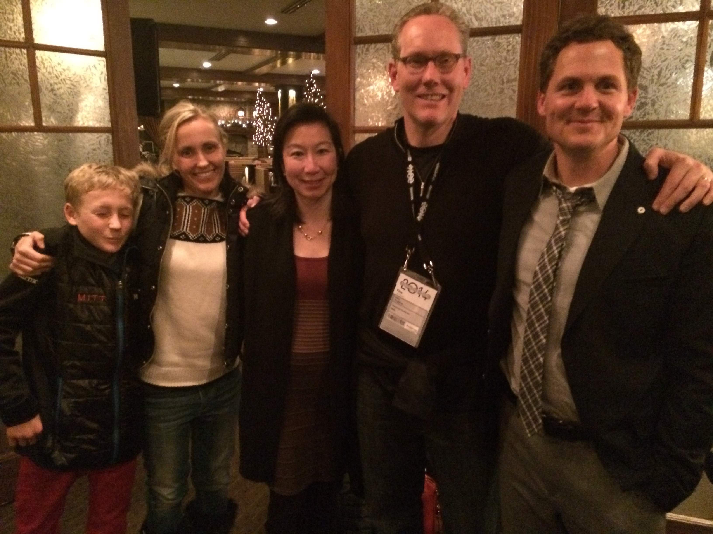
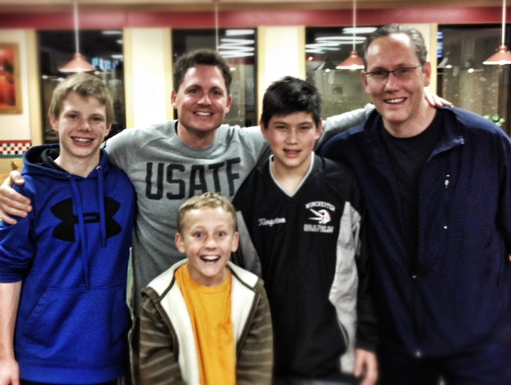
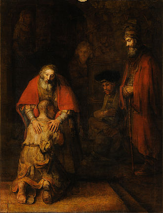
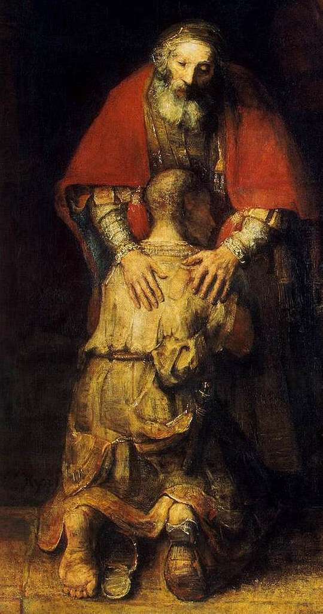

film/nouwen-documentary.mp4 · or swap the <video> tag for a YouTube/Vimeo embed.| # | Type | Dwell | What stays on screen | What the speaker is doing |
|---|---|---|---|---|
| 1 | ANCHOR | 60s | “What if I told you about someone…” | Open the talk. Set the documentary frame. |
| 2 | PHOTO | 45s | Nouwen archival | Introduce the hero, the film, the irony. |
| 3 | ANCHOR | 60s | “He thought he was the messenger.” | Land the central irony. |
| 4 | ANCHOR | 60s | “The film was being made on him.” | Plant the seed of the whole talk. |
| 5 | ATMOSPHERE | 45s | Ladder motif · the climb | The hard family, leaving at seventeen, running that looked like succeeding. |
| 6 | REVEAL | 25s | “Knew the words / couldn’t feel them.” | Twin-line beat. |
| 7 | ANCHOR | 75s | “Late November. 2021.” | Set the scene — mother, Sunday, the village. |
| 8 | PHOTO | 60s | Church exterior | Describe the day, the cold, the parish. |
| 9 | ANCHOR | 60s | “The room was thin.” | The attendance. The family that wasn’t there. |
| 10 | ATMOSPHERE | 60s | Brother walks in · pews | Six-four. Gaunt. The lap dog. The podium. |
| 11 | REVEAL | 20s | “About nothing.” | Forty-five minutes. Flipping pages. |
| 12 | ANCHOR | 75s | “The shame of my entire life.” | Fifty years outrunning this. Two hundred people. The microphone. |
| 13 | ANCHOR | 60s | “That is where the climbing ended.” | Pivot. |
| 14 | ATMOSPHERE | 90s | Wilderness terrain · three years | The wilderness. Things tried. The way the wilderness works. |
| 15 | ANCHOR | 60s | “Took the ladders. Took the words.” | What was lost — achievements as evidence. |
| 16 | ANCHOR | 60s | “Gradually. And then suddenly.” | Hemingway. The slow turn. |
| 17 | ANCHOR | 75s | “Just — loved.” | The discovery. Not because. With nothing left. |
| 18 | ANCHOR | 45s | “Remember the film.” | Bridge into Greg. |
| 19 | PHOTO | 45s | Greg portrait | Greg’s career, Mitt, Cheer, the favors. |
| 20 | ANCHOR | 60s | “Fifteen years.” | The gap. |
| 21 | PHOTO | 75s | John & Greg · Sundance 2014 | Real photo placed. Hero image. |
| 21b | PHOTO | 45s | Contact sheet · families | Through-line. Optional — can cut if pacing tight. |
| 22 | REVEAL | 25s | “He said yes / he waited.” | Two-line beat. |
| 23 | ANCHOR | 60s | “Two brothers. Two men.” | Becoming the sons. Older / younger. Neither was the father. |
| 24 | PHOTO | 75s | Rembrandt painting | He painted mercy because he needed mercy. |
| 25 | ATMOSPHERE | 60s | Russian-doll nested frames | Jesus → Rembrandt → Nouwen → Greg → John. |
| 26 | ANCHOR | 45s | “A story inside a story…” | Landing line. “I mean… come on.” |
| 27 | ANCHOR | 90s | “Of course it took fifteen years.” | The full litany — Rembrandt, Nouwen, me, Greg and me. |
| 28 | ATMOSPHERE | 60s | Waiting line · year ticks | Time as providence. Something larger than either of us. |
| 29 | ANCHOR | 75s | The father waits for a son who comes home. | The parable’s hinge. The waiting for Rembrandt, Nouwen, me, you. |
| 30 | ANCHOR | 60s | “As long as it takes.” | The room becomes the parable. |
| 31 | ANCHOR | 75s | “You are here to be loved.” | Climax. |
| 32 | FINAL | open | “I’m glad you’re here.” | Close. Let the room go still. |